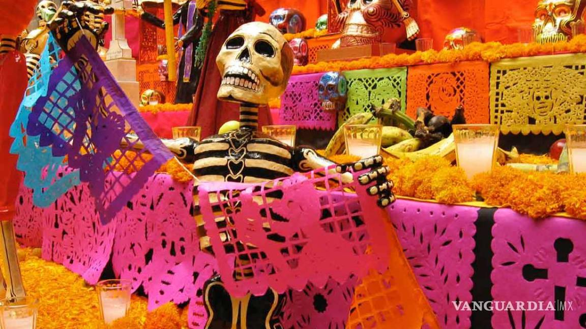
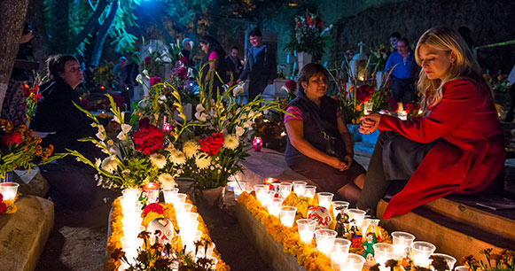
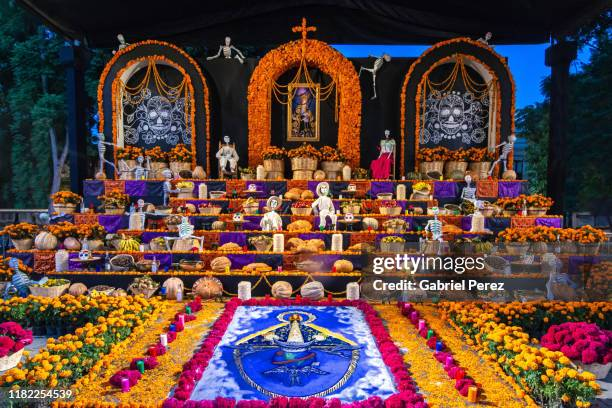
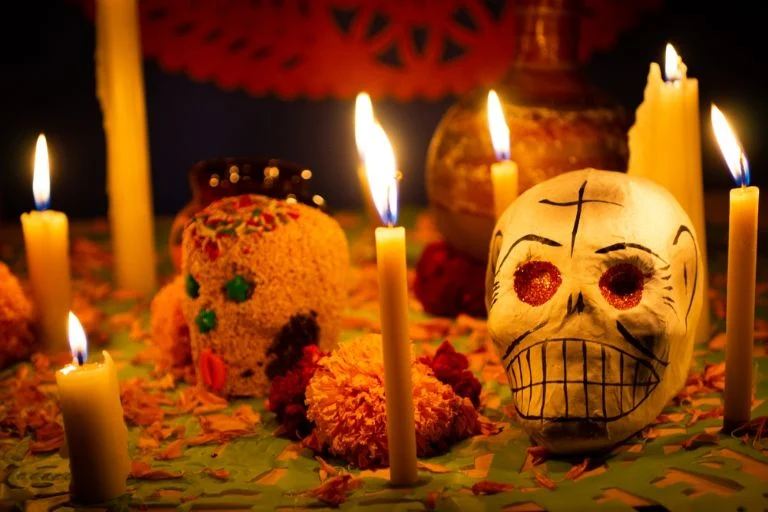

Introducción
El Día de Muertos es una festividad de origen prehispánico, en la cual el pueblo celebra y honra a sus familiares fallecidos mediante la colocación de altares u ofrendas sobre sus tumbas o en las casas, según la región del país en la que se encuentren.
Tradiciones
TRADICIONES PRINCIPALES= Altares: Se crean ofrendas en casas y cementerios con fotos, alimentos y flores. Calaveras: Calaveras de azúcar decoradas con los nombres de los fallecidos. Papel Picado: Decoraciones de papel cortado que simbolizan la vida efímera. Comida: Se preparan platillos tradicionales como pan de muerto. Visitas a Cementerios: Familias llevan flores y alimentos a las tumbas. Celebraciones Comunitarias: Desfiles y música que celebran la vida y la muerte.
Ofrendas
Ofrendar, en el Día de Muertos, es compartir con los difuntos el pan, la sal, las frutas, los manjares culinarios, el agua y, si son adultos, el vino. Ofrendar es estar cerca de nuestros muertos para dialogar con su recuerdo, con su vida. La ofrenda es el reencuentro con un ritual que convoca a la memoria.
Calaveras
Es el caso de estos deliciosos dulces en forma de cráneos que sirven para recordar a los muertos y el destino que todos compartiremos, aunque también son una forma de agasajar nuestro paladar y mantener una de las tradiciones más ricas de México.
